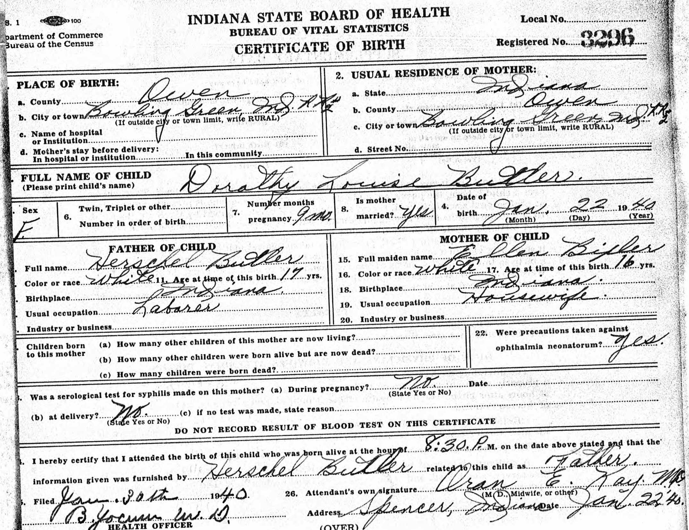
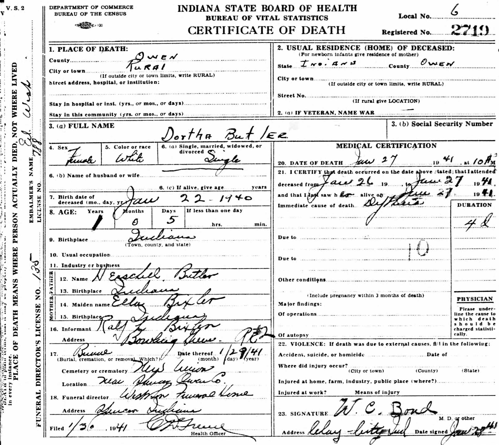
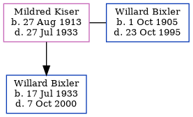

Dorothy Louise Butler 1940 - 1941
[ Home ] | [ Calendar ] | [ Surnames Index ] | [ Census Index ] | [ Family History ]The child of Hershel Butler (a restaurant manager) and Ella Bixler, Dorothy Butler, the sixth cousin on the mother's side of Nigel Horne, was born in Bowling Green, Owen, Indiana, USA on Jan 22, 19401. On Apr 1, 1940, she was living in Morgan, Owen, Indiana, USA1.
She died on Jan 27, 1941 in Owen.
Parents
- Hershel Henry was born on Sep 21, 1922
- Ella Louise was born on Sep 10, 1923
Citations
- US Census 1940 - Findmypast (was age 0 and the daughter of the head of the household)
Media
Dorothy Butler - birth certificate

Dorothy Butler - death certificate

1940 US Census

US Census 1940 - USC/1940/1455739135
Family Tree
Generated by ged2site. Last updated on Jun 11, 2024